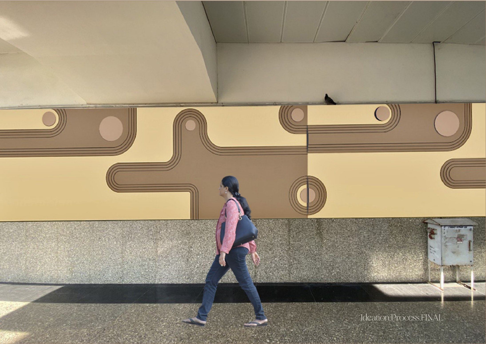
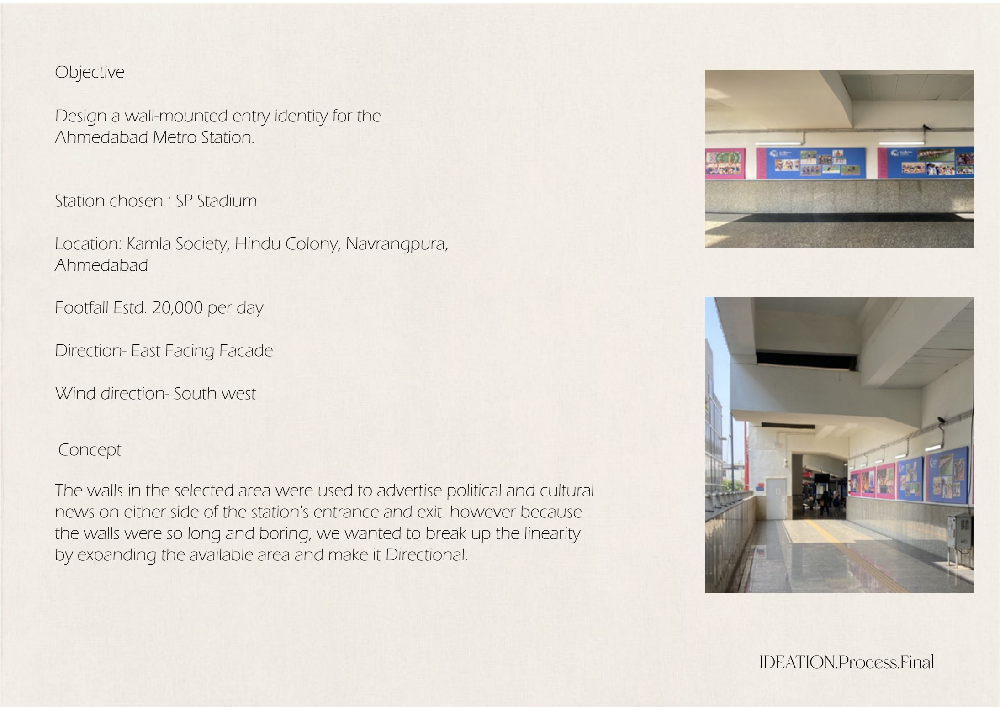
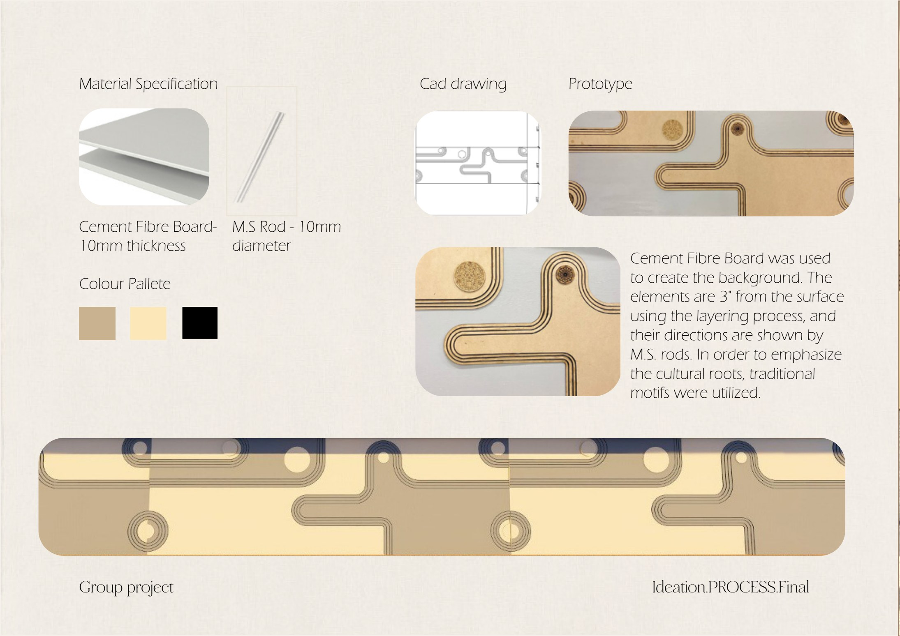

Surface Generation · Public Identity
Circumflex
Design surfaces that connect with the user and fit environments that are functional, artistic, technical or inspired by any art or craft. For this brief, we designed a wall-mounted entry identity for the Ahmedabad Metro Station.
SP Stadium Metro Station
A wall-mounted entry identity for the chosen station, located at Kamla Society, Hindu Colony, Navrangpura, Ahmedabad.
Breaking the linearity
The walls around the station entrance were primarily used for political and cultural advertisements, creating long, monotonous stretches. The design intent was to break this linearity, expand the visual field, and create a directional, identity-giving surface that guides commuters in and out of the station.
Layered, directional surface
A cement fibre board forms the background plane. Elements are offset roughly 3″ from the surface through a layering process, with their directions expressed by mild-steel rods. Traditional motifs were incorporated to emphasise the region's cultural roots.
| Element | Material | Spec |
|---|---|---|
| Background surface | Cement Fibre Board | 10 mm thickness |
| Directional elements | M.S. Rod | 10 mm diameter |
| Layer offset | — | ≈ 3″ from surface |
Concept to Installation


